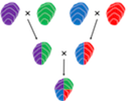

Pacific Hybreed’s advanced breeding program will address both threats and opportunities of great significance to shellfish growers. Changing ocean conditions are already presenting serious threats to traditional patterns of growth and development. Moreover, disease threats are increasing, including from the strain of herpes virus that has devastated cultivated oyster populations around the world. Traditional methods for producing seed have not effectively implemented state of the art genetic science to both enhance resilience in the face of these threats while improving yield from a relatively fixed inventory of productive land.

For nearly a century, crossbreeding has been improving the yields of corn and other crop through hybrid vigor. Pacific Hybreed is applying decades of university-based research, led by its founders, Dennis Hedgecock and Joth Davis*, on the genetic and physiological mechanisms of hybrid vigor in the Pacific oyster. Their research demonstrates the efficacy of crossbreeding for improving yields of shellfish. Pacific Hybreed will select pure-breeding parent lines to produce superior first-generation hybrids which will, in turn, serve as broodstock for the commercial production of double-cross second-generation hybrids. We will similarly optimize genetic combinations in superior tetraploid parent lines for the production of triploid seed for the industry.
*Hedgecock, D., and J. P. Davis. 2007. Heterosis for yield and crossbreeding of the Pacific oyster Crassostrea gigas. Aquaculture 272S1: S17–S29. http://www.sciencedirect.com/science/article/pii/S0044848607008150/pdfft?md5=90abe36abdcd1dc15f999a94745ff4d7&pid=1-s2.0-S0044848607008150-main.pdf